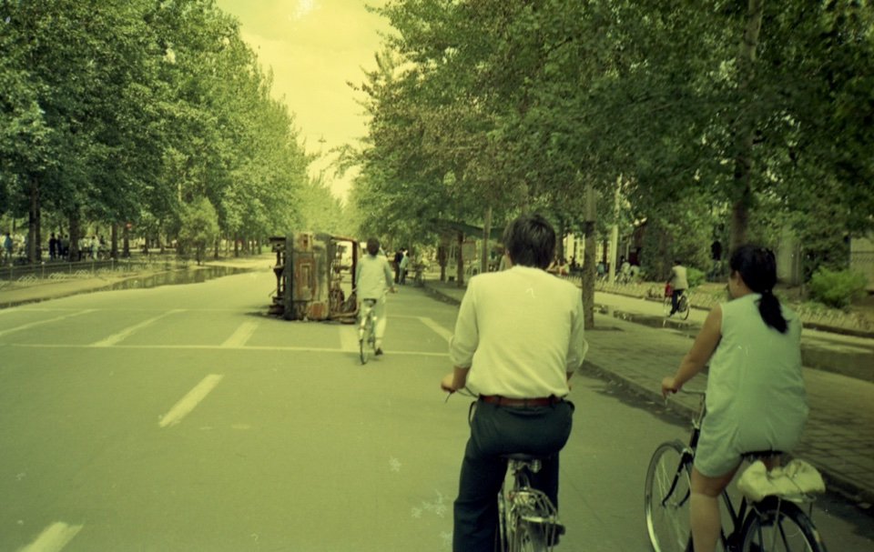

Beijing April–June 1989
June Fourth
Photo Archive
The Tiananmen protests, the military crackdown of June 3–4, and the days that followed.
Explore the timeline
Timeline
Selected events from the first public gatherings in April through the aftermath in June.
-
Mourning for Hu Yaobang
After the former Communist Party general secretary dies, mourners gather in Tiananmen Square. The gatherings grow into demonstrations calling for political reforms.
National Security Archive -
Students begin a hunger strike
Students in Tiananmen Square begin a hunger strike and call on the government to hold substantive talks with their representatives.
June 4th Memory & Human Rights Museum -
Martial law in Beijing
The government declares martial law in Beijing as the demonstrations continue.
National Security Archive -
Goddess of Democracy unveiled
A statue made by art students goes up in Tiananmen Square, facing the portrait of Mao Zedong.
June 4th Memory & Human Rights Museum -
–
Military crackdown
Troops advancing toward central Beijing open fire on the night of June 3, killing civilians. By the morning of June 4, troops have cleared Tiananmen Square.
National Security Archive · Documents 12–14 -
–
Aftermath on Zhongguancun Street
Daiwenchen photographs a burned-out vehicle on Zhongguancun Street in Beijing.
View the photograph and source notes